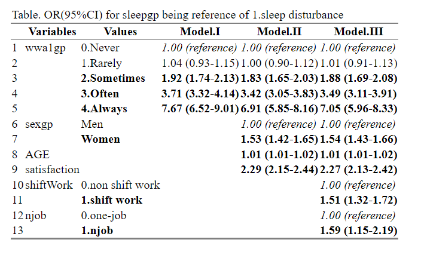

Chapter 9 Tables for public health summary
I will introduce making two kind of tables for public health. One is basic cross table, and the other is tables for logistic regression model. The chapter Tables for public health 1, 2, 3 already introduced the methods of creating tables. We also discuss about the function for each chapter. If we can use those function, it is very easy to create public health table. So, I uploaded functions as R packages into my github. The URL is https://github.com/jinhaslab/tabf . We can use this package to create public health table. let’s start
9.1 install package from github
tidyvere and htmlTable, and broom are frequently used in data manipulation. and the devtools will used to install package from “github”.
install_github wil be used for install package from github, as below.
you can download source file
rm(list=ls())
#basic requirment
if(!require("tidyverse")) install.packages("tidyverse")
if(!require("htmlTable")) install.packages("htmlTable")
if(!require("broom")) install.packages("broom")
# packages from github
if(!require("devtools")) install.packages("devtools")
library(devtools)
install_github("jinhaslab/tabf", force = TRUE)## * checking for file ‘/tmp/RtmpgQlxZ0/remotes302815cb7c46/jinhaslab-tabf-0e6533b/DESCRIPTION’ ... OK
## * preparing ‘tabf’:
## * checking DESCRIPTION meta-information ... OK
## * checking for LF line-endings in source and make files and shell scripts
## * checking for empty or unneeded directories
## * building ‘tabf_0.0.0.9000.tar.gz’library(tabf)
#tabf <- "https://dspubs.org/webapps/forum/open_data/tabf.R"
#download.file(tabf, "source/tabf.R")
#source("source/tabf.R")9.2 data import and manipulation
The data locate in dspubs.org’s open data . kwcsData1.rds will be used. I made folder name of data and saved the dowload file into data directory.
The way of loading rds data is through the readRDS(pathway).
url <- "https://dspubs.org/webapps/forum/open_data/kwcsData1.rds"
download.file(url, "data/kwcsData1.rds")
dat1 = readRDS("data/kwcsData1.rds")The step of data manipulation is most import task, the chapter Data Manipulation should be reviewed prior to follow this chapter.
9.3 select variables, and table 1
You can select variable after data manipulation, we created sleepgp, shortReturn, njob, sexgp, edugp, empgp in chapter of Data manipulation and Tables for pulblic health 1. Then, those selected variables will categorized into stratas, catVars, conVars.
stratas = c("sleepgp")
catVars = c("wwa1gp", "shortReturn","shiftWork" , "njob", "sexgp", "edugp", "empgp")
conVars = c("AGE","satisfaction")The function of tabf() create cross table by htmlTable(). tabf() function needs data1 as data to be used for table, stratas as group variables in the head, catVars as categorical variables, conVars = continues variables.
tab1 = tabf(dat1=dat1, stratas = stratas, catVars = catVars, conVars = conVars)
tab1## # A tibble: 22 × 5
## variables values `0.non distrubance` `1.sleep disturb…` p.value
## <chr> <chr> <chr> <chr> <chr>
## 1 "wwa1gp" Never 12222 (94.7%) 684 (5.3%) "<0.00…
## 2 "" Rarely 12316 (94.5%) 714 (5.5%) ""
## 3 "" Sometimes 9112 (90.3%) 981 (9.7%) ""
## 4 "" Often 3456 (82.8%) 717 (17.2%) ""
## 5 "" Always 634 (70.0%) 272 (30.0%) ""
## 6 "shortReturn" non short return 36183 (92.5%) 2927 (7.5%) "<0.00…
## 7 "" short return 1557 (77.9%) 441 (22.1%) ""
## 8 "shiftWork" non shift work 35056 (91.9%) 3073 (8.1%) "<0.00…
## 9 "" shift work 2684 (90.1%) 295 (9.9%) ""
## 10 "njob" one-job 37471 (91.9%) 3317 (8.1%) "<0.00…
## # … with 12 more rowsThat’s it. Anyway, we can further modify the table 1, using options of htmlTable().
tab1 %>%
setNames(c("", "", "None", "Disturbance", "P value")) %>%
htmlTable(
cgroup = c("", "Sleep disturbance", ""),
n.cgroup = c(2, 2, 1),
tfoot = "P value calculated by Chisq-Test and T-Test",
rnames = FALSE,
caption = "Basic Characteristics according to Sleep disturbance"
) | Basic Characteristics according to Sleep disturbance | ||||||
| Sleep disturbance | ||||||
|---|---|---|---|---|---|---|
| None | Disturbance | P value | ||||
| wwa1gp | Never | 12222 (94.7%) | 684 (5.3%) | <0.001 | ||
| Rarely | 12316 (94.5%) | 714 (5.5%) | ||||
| Sometimes | 9112 (90.3%) | 981 (9.7%) | ||||
| Often | 3456 (82.8%) | 717 (17.2%) | ||||
| Always | 634 (70.0%) | 272 (30.0%) | ||||
| shortReturn | non short return | 36183 (92.5%) | 2927 (7.5%) | <0.001 | ||
| short return | 1557 (77.9%) | 441 (22.1%) | ||||
| shiftWork | non shift work | 35056 (91.9%) | 3073 (8.1%) | <0.001 | ||
| shift work | 2684 (90.1%) | 295 (9.9%) | ||||
| njob | one-job | 37471 (91.9%) | 3317 (8.1%) | <0.001 | ||
| njob | 269 (84.1%) | 51 (15.9%) | ||||
| sexgp | Men | 17892 (93.1%) | 1327 (6.9%) | <0.001 | ||
| Women | 19848 (90.7%) | 2041 (9.3%) | ||||
| edugp | university or more | 19597 (92.9%) | 1502 (7.1%) | <0.001 | ||
| high school | 14943 (91.9%) | 1318 (8.1%) | ||||
| middle school or below | 3200 (85.4%) | 548 (14.6%) | ||||
| empgp | paid-worker | 25786 (92.4%) | 2122 (7.6%) | <0.001 | ||
| employer/self-employer | 2539 (91.7%) | 229 (8.3%) | ||||
| own-account worker | 8359 (90.5%) | 880 (9.5%) | ||||
| unpaind family work | 1056 (88.5%) | 137 (11.5%) | ||||
| AGE | 46.8±12.4 | 49.7±11.9 | <0.001 | |||
| satisfaction | 2.1±0.5 | 2.4±0.6 | <0.001 | |||
| P value calculated by Chisq-Test and T-Test | ||||||
9.4 logistic regression model and table 3
There are 3 kind of models, model II and III are include more confounding variables. So, the table generally review the 3 kind of models in same table. Those 3 kind of model will be printed at once.
mod1 = dat1 %>%
glm(data=.,family="binomial",formula = sleepgp == "1.sleep disturbance"
~ wwa1gp)
mod2 = dat1 %>%
glm(data=.,family="binomial",formula = sleepgp == "1.sleep disturbance"
~ wwa1gp + AGE + sexgp +satisfaction)
mod3 = dat1 %>%
glm(data=.,family="binomial",formula = sleepgp == "1.sleep disturbance"
~ wwa1gp + AGE + sexgp +satisfaction + shiftWork + njob)before we start to table draw, we review summmry of models. The model result is suitable to draw table.
summary(mod1)##
## Call:
## glm(formula = sleepgp == "1.sleep disturbance" ~ wwa1gp, family = "binomial",
## data = .)
##
## Deviance Residuals:
## Min 1Q Median 3Q Max
## -0.8450 -0.4522 -0.3357 -0.3300 2.4238
##
## Coefficients:
## Estimate Std. Error z value Pr(>|z|)
## (Intercept) -2.88303 0.03929 -73.378 <2e-16 ***
## wwa1gp1.Rarely 0.03526 0.05500 0.641 0.521
## wwa1gp2.Sometimes 0.65426 0.05170 12.655 <2e-16 ***
## wwa1gp3.Often 1.31024 0.05681 23.062 <2e-16 ***
## wwa1gp4.Always 2.03679 0.08245 24.704 <2e-16 ***
## ---
## Signif. codes: 0 '***' 0.001 '**' 0.01 '*' 0.05 '.' 0.1 ' ' 1
##
## (Dispersion parameter for binomial family taken to be 1)
##
## Null deviance: 23305 on 41107 degrees of freedom
## Residual deviance: 22258 on 41103 degrees of freedom
## AIC: 22268
##
## Number of Fisher Scoring iterations: 5The table will be draw using oddsf(), and you can modify that tabel. oddsf() return data frame, so we can edit that using data manipulation.
oddsf(mod1, mod2, mod3) %>% htmlTable()| Variables | Values | Model.I | Model.II | Model.III | |
|---|---|---|---|---|---|
| 1 | wwa1gp | 0.Never | 1.00 (reference) | 1.00 (reference) | 1.00 (reference) |
| 2 | wwa1gp | 1.Rarely | 1.04 (0.93-1.15) | 1.00 (0.90-1.12) | 1.01 (0.91-1.13) |
| 3 | wwa1gp | 2.Sometimes | 1.92 (1.74-2.13) | 1.83 (1.65-2.03) | 1.88 (1.69-2.08) |
| 4 | wwa1gp | 3.Often | 3.71 (3.32-4.14) | 3.42 (3.05-3.83) | 3.49 (3.11-3.91) |
| 5 | wwa1gp | 4.Always | 7.67 (6.52-9.01) | 6.91 (5.85-8.16) | 7.05 (5.96-8.33) |
| 6 | sexgp | Men | 1.00 (reference) | 1.00 (reference) | |
| 7 | sexgp | Women | 1.53 (1.42-1.65) | 1.54 (1.43-1.66) | |
| 8 | AGE | 1.01 (1.01-1.02) | 1.01 (1.01-1.02) | ||
| 9 | satisfaction | 2.29 (2.15-2.44) | 2.27 (2.13-2.42) | ||
| 10 | shiftWork | 0.non shift work | 1.00 (reference) | ||
| 11 | shiftWork | 1.shift work | 1.51 (1.32-1.72) | ||
| 12 | njob | 0.one-job | 1.00 (reference) | ||
| 13 | njob | 1.njob | 1.59 (1.15-2.19) |
You also use my default form of Table using by oddsTabf(), that return html so it is very easy to copy and paste to words.
oddsTabf(mod1, mod2, mod3)
9.5 Quiz
Our hypothesis is “sleep disturbance is not differ according to frequency of one-call come back”. To make public health table, let use jinhaslab/tabf.
9.5.1 install and load library tabf
jinha upload r function into github. the repository name is tabf and the username jinhaslab in github. please install and load library tabf. What is correct pathway in following code?
library(devtools)
install_github("pathway")
library(tabf)9.5.2 data manipulation
9.5.2.1 strat value and missing value check
- values check
wcomback is our main interesting variables. how many kind of values are there? how many people has NA value in dat1?
dat1 %>% count(wcomback)exclude particpant who has NA value in dat1, and save that data into dat2.
dat2 <- dat1 %>%
filter("your code 1")hint: is.na()
9.5.2.2 value mutate and check
wcomback has value of Daily, Several times a week, Several times a month, Less often, Never. create oncallgp as 3.more than several time a week, 2.several times a month, 1.less often, 0.never.
dat2 <- dat1 %>%
filter("your code 1") %>%
mutate(oncallgp = case_when(
"your code 2"
))9.5.2.3 cross table simple
| oncallgp | sleepgp | n | prob | |
|---|---|---|---|---|
| 1 | 0.never | 1.sleep disturbance | 1610 | 6.92 |
| 2 | 1.less often | 1.sleep disturbance | 597 | 10.03 |
| 3 | 2.several times a month | 1.sleep disturbance | 107 | 14.94 |
| 4 | 3.more than several time a week | 1.sleep disturbance | 70 | 18.42 |
To create that table, please fill the your code 3 (two lines) as below.
dat2 %>%
group_by(oncallgp) %>%
count(sleepgp) %>%
`your code 3-1` %>%
`your code 3-2`
htmlTable()9.5.2.4 cross table using tabf
Create tabel as below by usingtabf()
| variables | values | 0.non distrubance | 1.sleep disturbance | p.value | |
|---|---|---|---|---|---|
| 1 | oncallgp | never | 21667 (93.1%) | 1610 (6.9%) | <0.001 |
| 2 | less often | 5355 (90.0%) | 597 (10.0%) | ||
| 3 | several times a month | 609 (85.1%) | 107 (14.9%) | ||
| 4 | more than several time a week | 310 (81.6%) | 70 (18.4%) | ||
| 5 | shortReturn | non short return | 26805 (92.8%) | 2093 (7.2%) | <0.001 |
| 6 | short return | 1136 (79.6%) | 291 (20.4%) | ||
| 7 | shiftWork | non shift work | 25655 (92.3%) | 2155 (7.7%) | 0.017 |
| 8 | shift work | 2286 (90.9%) | 229 (9.1%) | ||
| 9 | njob | one-job | 27782 (92.2%) | 2354 (7.8%) | <0.001 |
| 10 | njob | 159 (84.1%) | 30 (15.9%) | ||
| 11 | sexgp | Men | 13530 (93.4%) | 958 (6.6%) | <0.001 |
| 12 | Women | 14411 (91.0%) | 1426 (9.0%) | ||
| 13 | edugp | university or more | 15238 (93.1%) | 1133 (6.9%) | <0.001 |
| 14 | high school | 10590 (92.0%) | 926 (8.0%) | ||
| 15 | middle school or below | 2113 (86.7%) | 325 (13.3%) | ||
| 16 | empgp | paid-worker | 21785 (92.5%) | 1759 (7.5%) | <0.001 |
| 17 | employer/self-employer | 1522 (92.5%) | 124 (7.5%) | ||
| 18 | own-account worker | 3977 (90.2%) | 434 (9.8%) | ||
| 19 | unpaind family work | 657 (90.7%) | 67 (9.3%) | ||
| 20 | AGE | 45.9±12.3 | 48.8±11.9 | <0.001 | |
| 21 | satisfaction | 2.1±0.5 | 2.3±0.6 | <0.001 |
9.5.2.5 logistic regression model
create mymod1 as logistic regression model. The formula of mymod1 is that odds ratio of sleepgp when being 1.sleep distrubance by oncallgp. what is odds ratio and 95% CI for oncallgp of 3.more than several time a week compare to that of 0.never? (answer should be reported two digits number (rounds from 3rd decimal))
Create mymod2, mymod3. mymod2 is mymod1 + further adjustment of AGE, sexgp and satisfaction. mymod3 is mymod2 + further adjustment of shiftWork and njob.
Then, create below Table using oddsTabf().
| Table. OR(95%CI) for sleepgp being reference of 1.sleep disturbance | |||||
| Variables | Values | Model.I | Model.II | Model.III | |
|---|---|---|---|---|---|
| 1 | oncallgp | 0.never | 1.00 (reference) | 1.00 (reference) | 1.00 (reference) |
| 2 | 1.less often | 1.50 (1.36-1.66) | 1.50 (1.35-1.65) | 1.49 (1.35-1.65) | |
| 3 | 2.several times a month | 2.36 (1.91-2.92) | 2.37 (1.91-2.95) | 2.34 (1.88-2.91) | |
| 4 | 3.more than several time a week | 3.04 (2.33-3.96) | 3.07 (2.34-4.03) | 3.08 (2.35-4.04) | |
| 5 | sexgp | Men | 1.00 (reference) | 1.00 (reference) | |
| 6 | Women | 1.51 (1.38-1.64) | 1.51 (1.39-1.65) | ||
| 7 | AGE | 1.02 (1.01-1.02) | 1.02 (1.01-1.02) | ||
| 8 | satisfaction | 2.44 (2.26-2.64) | 2.44 (2.26-2.63) | ||
| 9 | shiftWork | 0.non shift work | 1.00 (reference) | ||
| 10 | 1.shift work | 1.17 (1.01-1.35) | |||
| 11 | njob | 0.one-job | 1.00 (reference) | ||
| 12 | 1.njob | 2.08 (1.39-3.11) | |||